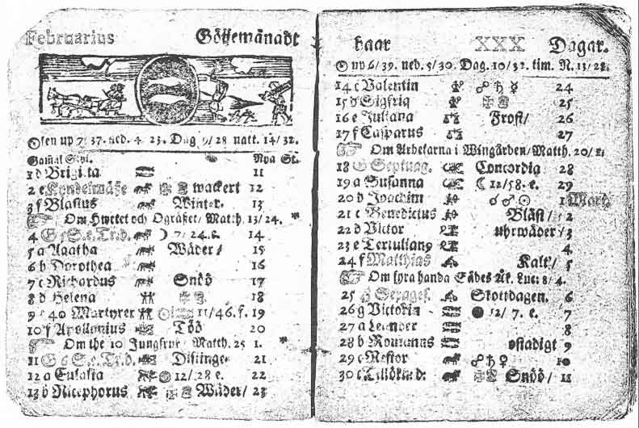

В 1699 году в Шведском королевстве (которое в то время включало и Финляндию) решили перейти с юлианского календаря на григорианский. Однако шведы не стали сдвигать календарь на 11 накопившихся к тому времени дней вперёд, а решили делать переход постепенно, пропуская високосные года в течение 40 лет, то есть все эти годы после 28 февраля должно было идти 1 марта и каждые 4 года они на один день приближались бы к григорианскому календарю. Таким образом, 1700 год был невисокосным годом в Швеции. Однако, несмотря на принятый план, 1704 и 1708 годы были високосными. Из-за этого в течение 11 лет шведский календарь опережал на один день юлианский календарь, но отставал на десять дней от григорианского. В 1711 году король Карл XII решил отказаться от реформы календаря и вернуться к юлианскому календарю. Для этого в 1712 году в феврале были добавлены два дня и, таким образом, в Швеции в 1712 году было 30 февраля. Окончательно Швеция перешла на григорианский календарь в 1753 году обычным для всех стран способом — день, следующий за 17 февраля, объявили 1 марта.
В 1929 году в СССР предлагалось ввести советский революционный календарь, где каждая неделя имела бы пять дней (пятидневки) и каждый месяц длился бы 30 дней, или ровно шесть недель. Оставшиеся 5 или 6 дней становились так называемыми «безмесячными каникулами».
Советский революционный календарь действительно использовался в 1930 и 1931 годах, но 30 февраля в нём не было.
Исходя из того, что каждый месяц должен был состоять из тридцати дней, в некоторых источниках делается вывод, что в Советском Союзе в 1930 и 1931 годах якобы существовало 30 февраля. В действительности это предложение было отвергнуто.